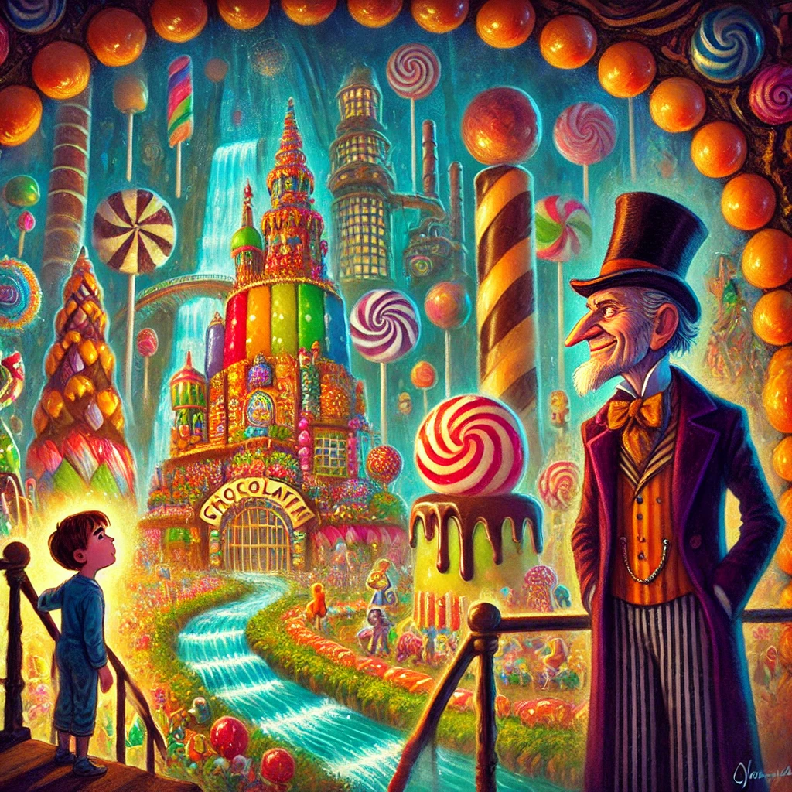

찰리와 초콜릿 공장
Index
작가
로알드 달
출판일
1964년
감상평에 대한 AI그림
찰리와 초콜릿 공장은 상상력 넘치는 세계 속에서 선한 마음과 올바른 태도가 결국 보상을 받는다는 교훈을 전하는 작품이다.
찰리가 다양한 개성을 지닌 아이들과 함께 겪는 모험은 유쾌하면서도 인간 본성에 대한 풍자를 담고 있어 흥미롭다.
환상적인 초콜릿 공장의 매력적인 묘사와 윌리 웡카의 독특한 성격이 어우러져, 어린이뿐만 아니라 어른들에게도 깊은 인상을 남긴다.

감상평에 대한 AI평가
이 감상평은 비판적 시선, 분석적 태도, 감동과 공감을 조화롭게 반영하며, 작품의 깊이를 성찰하는 독자의 시선을 보여준다.
✨ 교훈적 해석과 풍자의 인식: 이 감상평은 작품을 단순한 모험담이 아니라 교훈적 메시지와 인간 본성에 대한 풍자로 해석하는 시선을 보여준다. 어린이의 순수한 시선과 성인의 비판적 해석이 조화롭게 드러난다.
✨ 즐거움과 분석의 균형: 찰리의 모험을 유쾌하게 받아들이면서도, 작품의 교훈적 요소와 인물들의 개성을 분석하려는 태도가 반영되었다. 독자가 작품을 단순한 재미뿐만 아니라 의미 있는 이야기로 탐색하려는 태도를 지녔음을 알 수 있다.
✨ 경이로움과 공감: 초콜릿 공장의 환상적인 묘사에 대한 감탄과 함께, 찰리의 여정 속에서 인간 본성에 대한 풍자를 인식하며 공감을 느낀다. 즐거움과 감동이 어우러진 감상으로, 작품의 깊이를 성찰하려는 감정이 담겨 있다.
이 감상평은 작품을 단순한 동화가 아닌 교훈적이고 풍자적인 이야기로 바라보는 시선을 반영하며, 즐거움과 분석적인 접근을 균형 있게 조화한 태도를 담고 있다. 또한, 경이로움과 흥미 속에서 교훈적인 감동을 느낀 독자의 감정을 충실히 드러낸 감상평이라 할 수 있다.